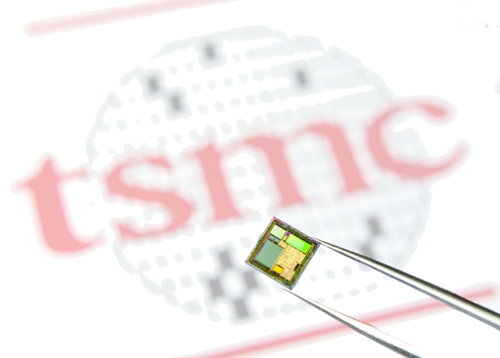

<html>
	<head>
		<title>Rebecca Yeap</title>
		<link rel="stylesheet" type="text/css" href="assets/css/bootstrap.min.css">
		<link rel="stylesheet" type="text/css" href="assets/css/tsmc.css">
	</head>
</html>
<body>
	<div id="navbar">
		<div id="labels-container">
		<div class="headerlabels" style="display: flex;">
				<div class="about">
					<a href="about.html">ABOUT</a> 
				</div>
				<div class="work">
					<a href="work.html">WORK</a> 
				</div>
				<div class="nonwork">
					<a href="nonwork.html">WORK</a> 
				</div>
			</div>
		</div>
		<div>
			<!---->
		</div>
	</div>
	<div class= "container-fluid" id="about_block"> 
		<div class="row">
			<div class="col-md-6 offset-md-2">
				<div style="padding-top: 100px">
					<h2>TSMC Nanjing Fab & Design Center</h2>
				</div>
				<div class="row">
				<div class="col-md-6" style="padding-top: 75px">
					<p>TSMC is the world’s leading semiconductor foundry, manufacturing 9,920 different products using 258 distinct technologies in 2017. As a brand management intern, I worked on the UX design of a touchscreen interface and the overall showroom content experience for the latest fabrication center opening in Nanjing, China.  
					 </p>  
					<p>With the time, financial, and software implementation restraints in mind, I designed over 80 screens for both English and simplified Chinese. My process involved industry and company research, wireframes, mockups, high-fidelity prototypes and feasibility tests with software developers. </p>
					</div>
				
			</div>
		</div>
		<div class="row">
			<div class="col-md-8 offset-md-2"> 
				
			</div>
			
		</div>
	</div>
		
</body>
</html>